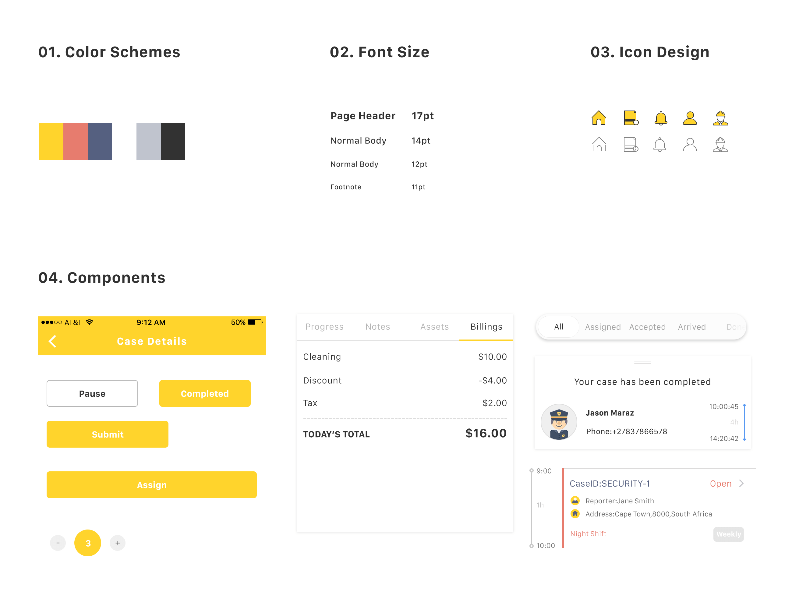
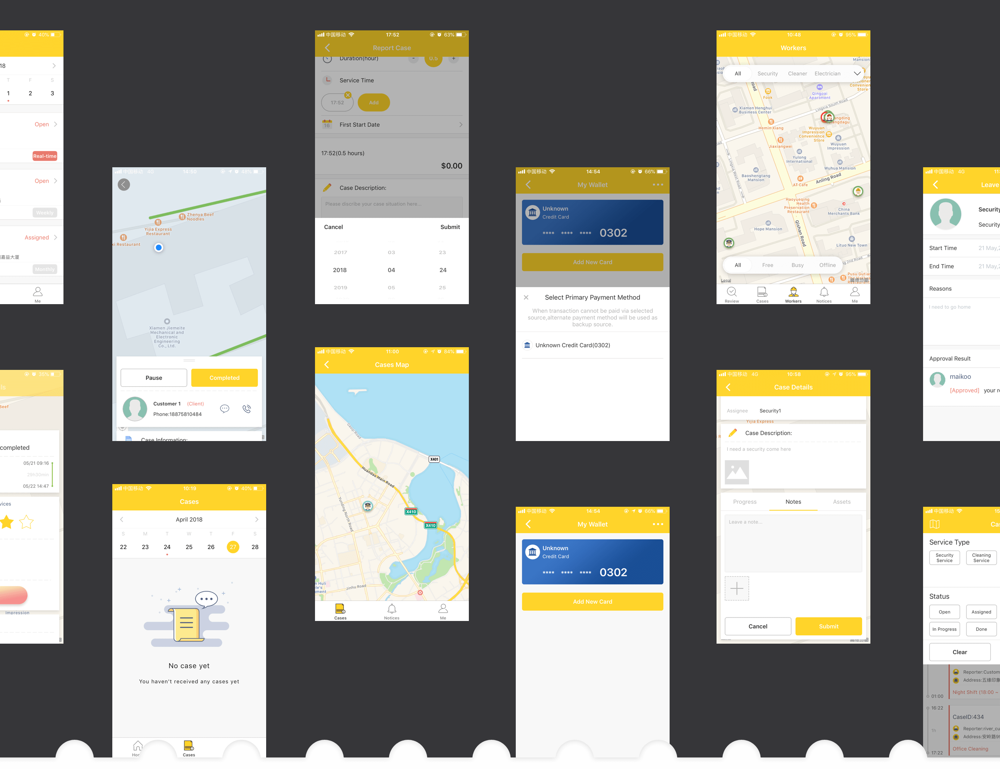

E-mail: wyue.cc@gmail.com
Services Cube APP
An app that focuses on providing field-based services.
UE / UI DESIGN
Services cube is in the business of getting qualified field-based service providers for various services ranging from cleaning services, security needs, appliances repairs,gardening and so on.
Services cube makes it easy for scheduling,assigning jobs,tracking productivity.
In our design, we choose bright yellow as our theme color. Since we provide various of services for people in need, we want our app to be associated with hope and happiness. What's more, we use color indicators to imply different types of job status, which play an significant part in our app's major functions.


Also, creating a basic UI toolkit helps a lot. It lets our app stay in control, meawhile our developers are able to expand on functionality without compromising design or wasting time redesigning standard elements.
 You can download the app here: